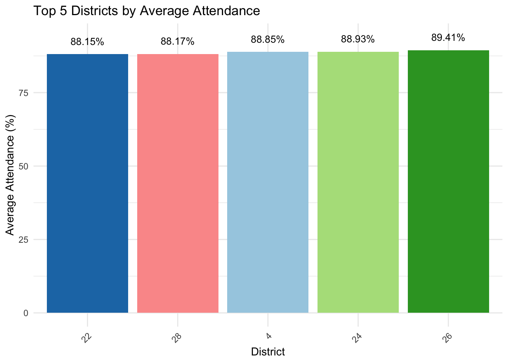
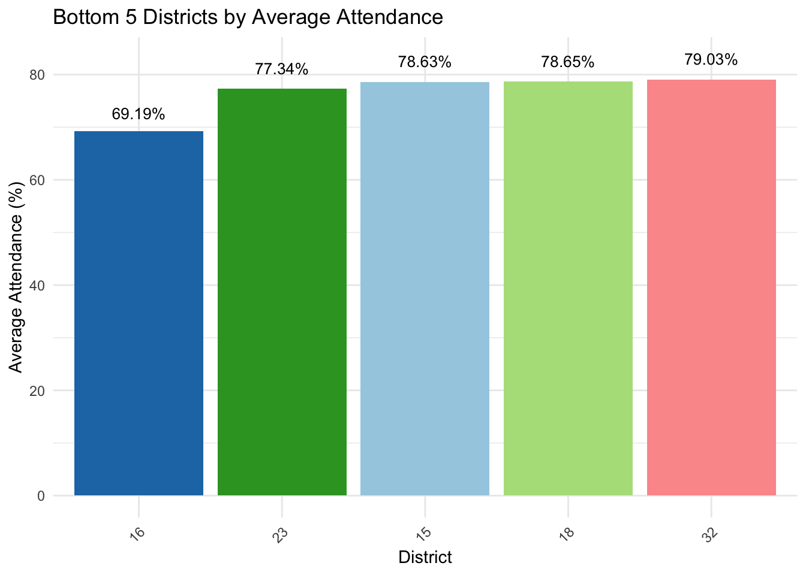
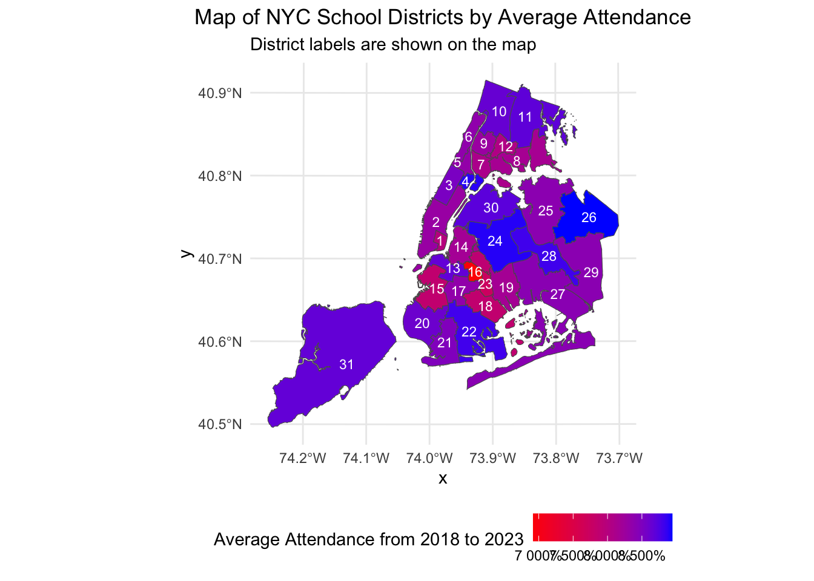
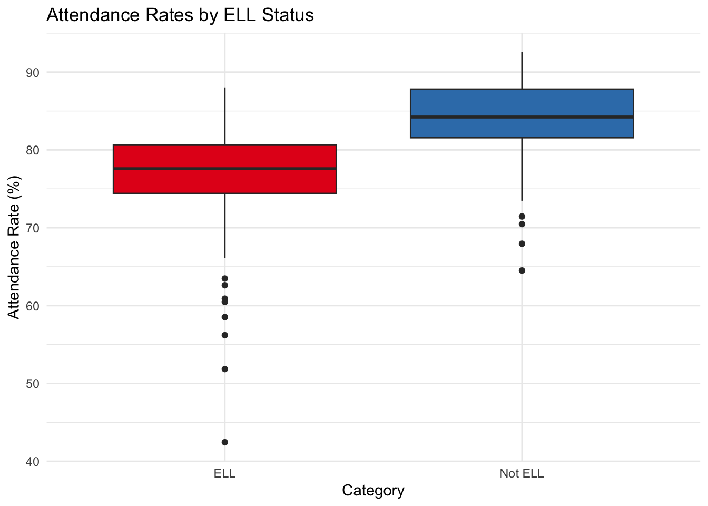
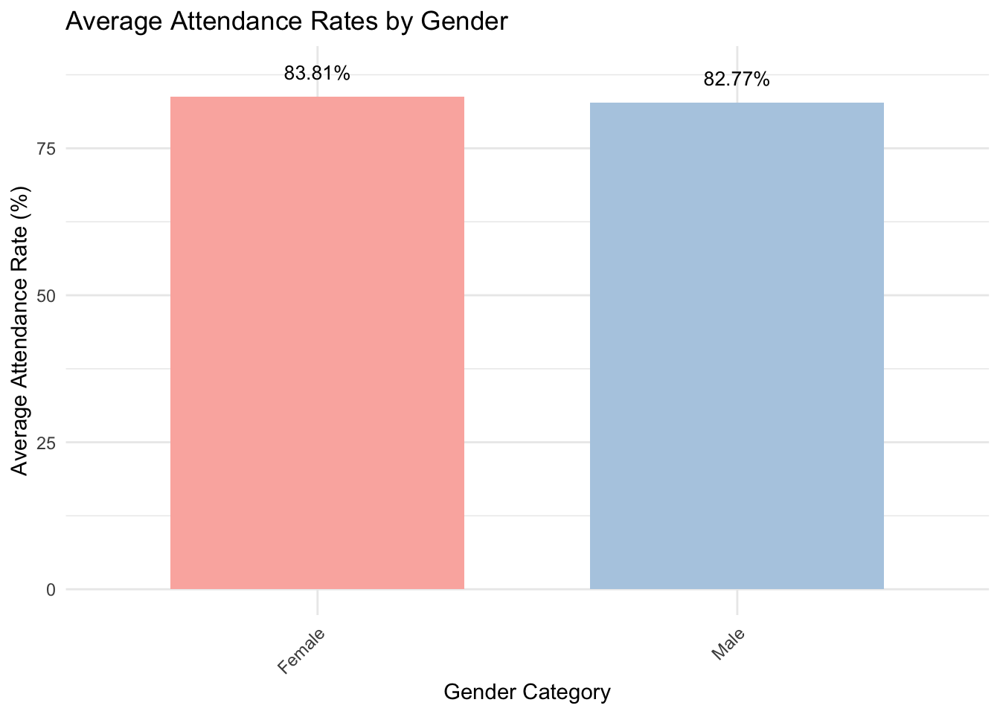
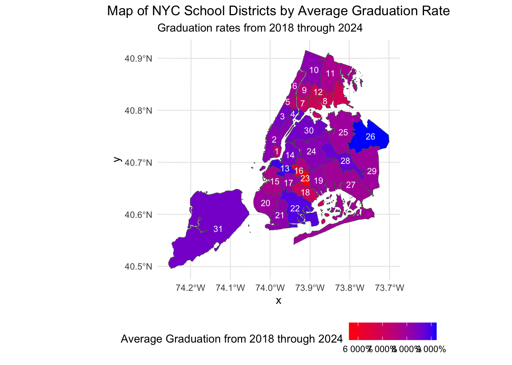
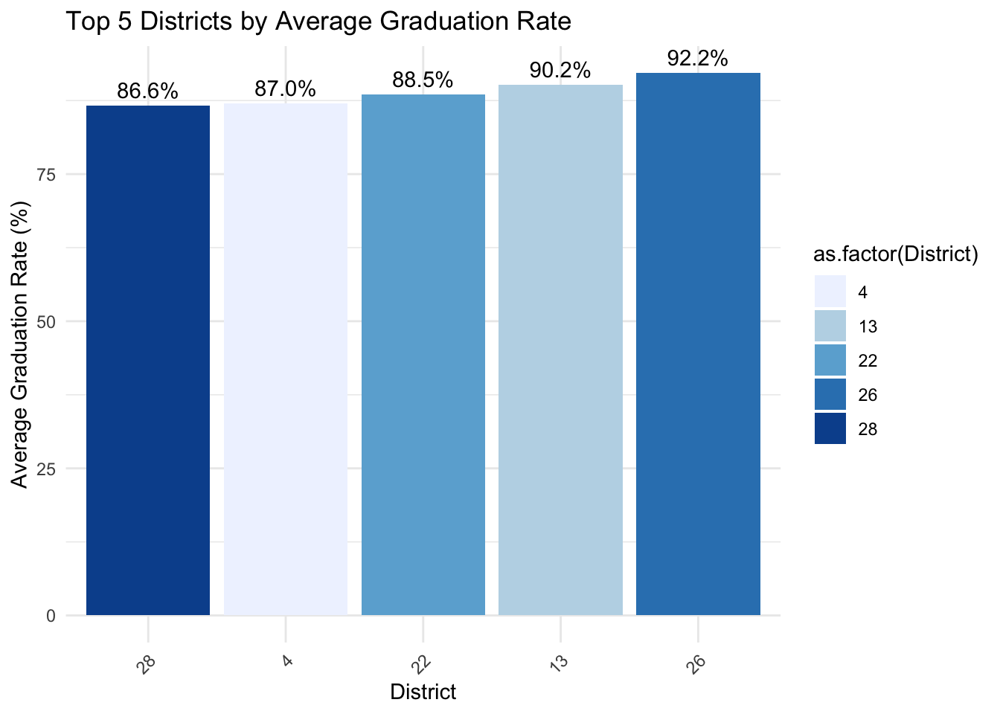
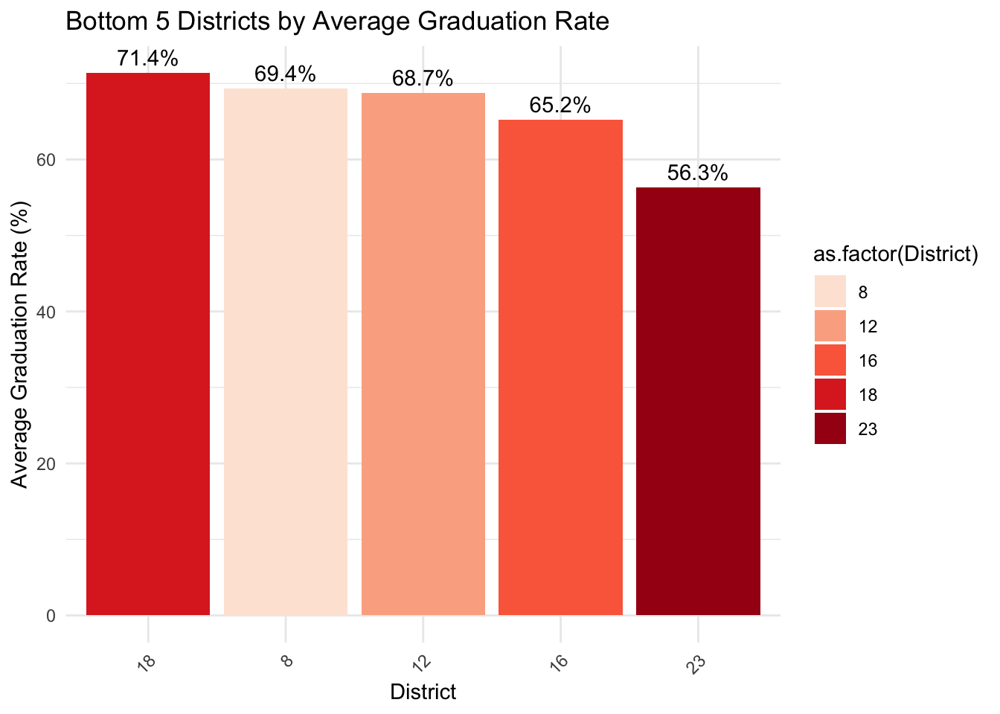
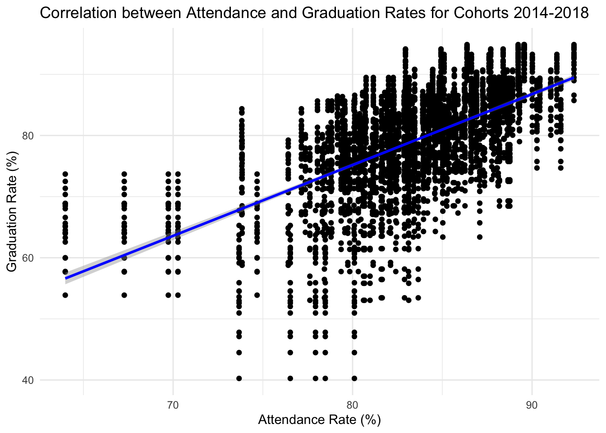

Hello, thank you for taking the time to delve into this independent study, which explores the question of what factors are impacting overall academic performance in New York City’s public high schools. My specific task was to analyze attendance and graduation rates across New York City’s school districts from 2018 to 2023. As a New Yorker and an alumnus of the NYC school system, this research is particularly close to my heart.
In this report, we will analyze data on attendance and graduation rates from the nyc doe infohub to uncover trends and draw insights that may inform future educational strategies within the city. Hope you enjoy!
Relevant Libraries
Code
library(tidyverse)
── Attaching core tidyverse packages ──────────────────────── tidyverse 2.0.0 ──
✔ dplyr 1.1.4 ✔ readr 2.1.5
✔ forcats 1.0.0 ✔ stringr 1.5.1
✔ ggplot2 3.5.1 ✔ tibble 3.2.1
✔ lubridate 1.9.3 ✔ tidyr 1.3.1
✔ purrr 1.0.2
── Conflicts ────────────────────────────────────────── tidyverse_conflicts() ──
✖ dplyr::filter() masks stats::filter()
✖ dplyr::lag() masks stats::lag()
ℹ Use the conflicted package (<http://conflicted.r-lib.org/>) to force all conflicts to become errors
Code
library(ggplot2)library(scales)
Attaching package: 'scales'
The following object is masked from 'package:purrr':
discard
The following object is masked from 'package:readr':
col_factor
Code
library(corrplot)
corrplot 0.95 loaded
Code
library(readxl)library(DT)library(sf)
Linking to GEOS 3.11.0, GDAL 3.5.3, PROJ 9.1.0; sf_use_s2() is TRUE
Code
library(gt)
These are all the packages necessary for this analysis. If you do not have any of these libraries installed use install.packages() to install what you may need.
Loading the data
Code
get_github_excel_all_sheets <-function(file_path) {# Construct the full GitHub URL to the raw version of the file base_url <-"https://raw.githubusercontent.com/" full_url <-paste0(base_url, file_path)# Temporarily download the file temp_file <-tempfile(fileext =".xlsx")download.file(full_url, temp_file, mode ="wb") sheet_names <-excel_sheets(temp_file) sheets_data <-lapply(sheet_names, function(sheet) {read_excel(temp_file, sheet = sheet) })# Return the list of data framesreturn(sheets_data)}#Github pathsfile_path <-"Edodia/STA9750-2024-FALL/main/public-district-attendance-results-2018-2023.xlsx"file_path2 <-"Edodia/STA9750-2024-FALL/main/2023-graduation-rates-public-district.xlsx"all_sheets_data <-suppressWarnings(get_github_excel_all_sheets(file_path))all_sheets_data2 <-suppressWarnings(get_github_excel_all_sheets(file_path2))Attendance_ALL <- all_sheets_data[[2]]Attendance_SWD <- all_sheets_data[[3]]Attendance_Ethnicity <- all_sheets_data[[4]]Attendance_Gender <- all_sheets_data[[5]]Attendance_Poverty <- all_sheets_data[[6]]Attendance_ELL <- all_sheets_data[[7]]Attendance_STH <- all_sheets_data[[8]]Graduation_Rates_All <- all_sheets_data2[[2]]Graduation_Rates_SWD <- all_sheets_data2[[5]]Graduation_Rates_ELL <- all_sheets_data2[[3]]Graduation_Rates_Ethnicity <- all_sheets_data2[[6]]Graduation_Rates_Gender <- all_sheets_data2[[7]]Graduation_Rates_Poverty <- all_sheets_data2[[8]]
This R function retrieves Excel files from GitHub and loads all sheets directly into your R environment. It constructs a URL for the raw file, downloads it temporarily, and then reads each sheet into a separate data frame using the readxlpackage. Ensure readxl is installed and loaded before running this function. The datasets include information on studants with disablities (SWD), ethnicity, gender, english language learner status (ELL). Only the attendance dataset includes information on students in temporary housing (STH).
Initial Cleaning of Attendance Data
Code
#Specifiying data is within grades 12 for attendance to match graduation datafilter_high_school_grades <-function(data) { filtered_data <- data[data$`Grade`%in%c("12"), ]return(filtered_data)}Attendance_Poverty <-filter_high_school_grades(Attendance_Poverty)Attendance_Ethnicity <-filter_high_school_grades(Attendance_Ethnicity)Attendance_Gender <-filter_high_school_grades(Attendance_Gender)Attendance_ELL <-filter_high_school_grades(Attendance_ELL)Attendance_ALL <-filter_high_school_grades(Attendance_ALL)Attendance_STH <-filter_high_school_grades(Attendance_STH)Attendance_SWD <-filter_high_school_grades(Attendance_SWD)
In an effort to enhance the relevance and precision of our analysis, I have refined the scope of this section of our project to concentrate exclusively on twelfth-grade students. This decision aligns the attendance data directly with our graduation dataset, enabling a focused examination of student outcomes at the end of their high school journey.
Attendance Analysis
Code
#Attendance Analysis# Identifying the top five worst and best districts in NYC for attendanceattendance_summary <- Attendance_ALL %>%group_by(District) %>%summarise(Average_Attendance =mean(`% Attendance`, na.rm =TRUE)) %>%arrange(desc(Average_Attendance))print(attendance_summary)
top_districts <- attendance_summary %>%top_n(5, wt = Average_Attendance) %>%arrange(desc(Average_Attendance))# Plot ggplot(top_districts, aes(x =reorder(District, Average_Attendance), y = Average_Attendance, fill =as.factor(District))) +geom_col(show.legend =FALSE) +geom_text(aes(label =sprintf("%.2f%%", Average_Attendance)), position =position_stack(vjust =1.05), color ="black", size =3.5) +scale_fill_brewer(palette ="Paired") +labs(title ="Top 5 Districts by Average Attendance", x ="District", y ="Average Attendance (%)") +theme_minimal() +theme(axis.text.x =element_text(angle =45, hjust =1))

Now, lets get to the meat of this project. As you see here this a quick overview of the five districts with the highest overall average attendance. In order it is district: 26 (89.41%), 24 (88.93%), 4 (88.85%), 28 (88.17%), 22 (88.15%). This is great! However, it is still a bit lower than I expected. I believed that the top five would have averages in the 90% range.
Code
#What are the bottom 5bottom_districts <- attendance_summary %>%arrange(Average_Attendance) %>%head(5) # Print to checkprint(bottom_districts)
ggplot(bottom_districts, aes(x =reorder(District, Average_Attendance), y = Average_Attendance, fill =as.factor(District))) +geom_col(show.legend =FALSE) +geom_text(aes(label =sprintf("%.2f%%", Average_Attendance)), position =position_stack(vjust =1.05), color ="black", size =3.5) +scale_fill_brewer(palette ="Paired") +labs(title ="Bottom 5 Districts by Average Attendance", x ="District", y ="Average Attendance (%)") +theme_minimal() +theme(axis.text.x =element_text(angle =45, hjust =1))

Inversely this visualization shows the bottom five districts and this is absolutely jarring. Not one of these five districts are above an 80% attendance rate, if these students were graded solely on their ability to attend school they would maybe get a C+. The list of the bottom five districts by average attendance from highest to lowest is: district 32 (79.03%), 18 (78.65%), 15 (78.63%), 23 (77.34%), 16 (69.19%).
Attendance District Map
Code
#Now ploting attendance rates using the nyc shapefiles#Initial setupif(!file.exists("nysd_24d.zip")){download.file("http://s-media.nyc.gov/agencies/dcp/assets/files/zip/data-tools/bytes/nysd_24d.zip", destfile="nysd_24d.zip", method ="curl")}td <-tempdir(); zip_contents <-unzip("nysd_24d.zip", exdir = td)fname_shp <- zip_contents[grepl("shp$", zip_contents)]nyc_sf <-read_sf(fname_shp)ggplot(nyc_sf, aes(geometry=geometry, fill = Shape_Area)) +geom_sf()
nyc_sf <- nyc_sf %>% dplyr::rename(District = SchoolDist)nyc_sf$District <-as.character(nyc_sf$District)attendance_summary$District <-as.character(attendance_summary$District)nyc_sf_attendance <-merge(nyc_sf, attendance_summary, by ="District", all.x =TRUE)#now plotggplot(nyc_sf_attendance, aes(geometry = geometry, fill = Average_Attendance)) +geom_sf() +geom_sf_text(aes(label = District), size =3, colour ="white", check_overlap =TRUE) +scale_fill_gradient(low ="red", high ="blue", name ="Average Attendance from 2018 to 2023", labels = scales::percent_format(accuracy =1)) +labs(title ="Map of NYC School Districts by Average Attendance", subtitle ="District labels are shown on the map") +theme_minimal() +theme(legend.position ="bottom", plot.title =element_text(hjust =0.5))

This is map that shows all of the districts across the city from 2018 to 2023. The lower the average attendance is the redder the district is and the higher the average attendance is the bluer it is. It seems that the worst attendance rates is concentrated in Bedstuy, the Bronx and the Lower East Side. While, Queens, Staten Island, and the Upper East Side generally show a higher average attendance rate.
Analysis of Attendance by Demographic Factors
ELL Status
Code
#ELL # Separate attendance data for ELL and Not ELL for the testattendance_ell <- Attendance_ELL$`% Attendance`[Attendance_ELL$Category =="ELL"]attendance_not_ell <- Attendance_ELL$`% Attendance`[Attendance_ELL$Category =="Not ELL"]# Perform a t-testt_test_result <-t.test(attendance_ell, attendance_not_ell)print(t_test_result)
Welch Two Sample t-test
data: attendance_ell and attendance_not_ell
t = -11.834, df = 298.04, p-value < 2.2e-16
alternative hypothesis: true difference in means is not equal to 0
95 percent confidence interval:
-8.517585 -6.088677
sample estimates:
mean of x mean of y
76.71204 84.01517
Code
#The Welch t-test results strongly suggest that non-ELL students attend school at a higher rate than ELL students.ggplot(Attendance_ELL, aes(x = Category, y =`% Attendance`, fill = Category)) +geom_boxplot() +labs(title ="Attendance Rates by ELL Status",x ="Category",y ="Attendance Rate (%)") +scale_fill_brewer(palette ="Set1") +theme_minimal() +theme(legend.position ="none")

I wanted to do something a little bit different and conduct a Welch t-test in order to analyze the difference between means of the ELL and not ELL students. The Welch t-test results, suggests that non-ELL students(84%) attend school at a higher rate than ELL students (76%), pointing to a potential disparity in attendance that might be influenced by language barriers.
# A tibble: 2 × 2
Category Average_Attendance
<chr> <dbl>
1 Female 83.8
2 Male 82.8
Code
ggplot(average_attendance_gender, aes(x = Category, y = Average_Attendance, fill = Category)) +geom_bar(stat ="identity", width =0.7) +geom_text(aes(label =sprintf("%.2f%%", Average_Attendance)), position =position_stack(vjust =1.05), color ="black", size =3.5) +scale_fill_brewer(palette ="Pastel1") +labs(title ="Average Attendance Rates by Gender",x ="Gender Category",y ="Average Attendance Rate (%)") +theme_minimal() +theme(legend.position ="none", axis.text.x =element_text(angle =45, hjust =1))

This bar chart shows that males and females attend school at a similar rate with women beating men by a small 1% margin. Unfortunately, there is not enough data on non-binary people so they have been left out of this study.
Students with disabilities attend school at a lower rate compared to their non disabled counterparts by a margin of 5%. This may be due to any number of factors such as lack of aid to students with disabilities or even possible bullying.
Students in temporary housing also do not attend school as much as students with permanent housing by a margin of 6%. This could have many different explanations as to why this may be such as lack of transportation, lack of resources, social and emotional issues, and general instability.
Interestingly though both students who are in poverty and those who are not are above an 80% average attendance rate with the margin being only 4%. However, students in poverty attend school less and the explanations for this is similar to the explanation for students in temporary housing.
As you can see here Asian students attend school at the highest rate out of all groups while Black and Hispanic students attend school the least. The Other group is a mixture of native american students and mixed race students. There are many possible explanations of this such as cultural differences or resource differences within each demographic group,
Graduation!! Someone call Kanye West!
Code
#Some data cleaning and modificationfilter_by_cohort_year <-function(data) {# Define the cohort years to include valid_cohorts <-c("2014", "2015", "2016", "2017", "2018")# Filter the data to include only the specified cohorts filtered_data <- data[data$`Cohort Year`%in% valid_cohorts, ]return(filtered_data)}Graduation_Rates_All <-filter_by_cohort_year(Graduation_Rates_All)Graduation_Rates_ELL <-filter_by_cohort_year(Graduation_Rates_ELL)Graduation_Rates_Poverty <-filter_by_cohort_year(Graduation_Rates_Poverty)Graduation_Rates_Gender <-filter_by_cohort_year(Graduation_Rates_Gender)Graduation_Rates_SWD <-filter_by_cohort_year(Graduation_Rates_SWD)
This section focuses on cleaning and filtering the data. I selected these specific cohorts as we will be able to correctly match it to the attendance data. Note that the cohort year references the year a student entered high school, so a student of the 2014 cohort would theoretically graduate in 2018.
Graduation District Map
Code
#Now graduation top 5 and bottom 5 districtsgraduation_summary <- Graduation_Rates_All %>%group_by(District) %>%summarise(Average_Graduation =mean(`% Grads`, na.rm =TRUE)) %>%arrange(desc(Average_Graduation))# View the summaryprint(graduation_summary)
top_districts <- graduation_summary %>%top_n(5, wt = Average_Graduation) %>%arrange(desc(Average_Graduation))nyc_sf_grads <-merge(nyc_sf, graduation_summary, by ="District", all.x =TRUE)nyc_sf_grads$District <-as.character(nyc_sf_grads$District)# Create the map with labelsgraduation_map <-ggplot(nyc_sf_grads, aes(geometry = geometry, fill = Average_Graduation)) +geom_sf() +# Draw the shapesgeom_sf_text(aes(label = District), size =3, colour ="white", check_overlap =TRUE, position =position_nudge(y =0.02)) +# Add district labelsscale_fill_gradient(low ="red", high ="blue", name ="Average Graduation from 2018 through 2024",labels =percent_format(accuracy =1)) +labs(title ="Map of NYC School Districts by Average Graduation Rate",subtitle ="Graduation rates from 2018 through 2024") +theme_minimal() +theme(legend.position ="bottom", plot.title =element_text(hjust =0.5))graduation_map

I hope you are enjoying all of these colorful maps! This is map showing all of the districts from 2018 to 2024. The redder it is the lower the graduation rates and the bluer it is the higher the graduation rate. It seems that the Bronx and Bedstuy are having a problem when it comes to graduation rates while Queens is excelling.
Top 5 Graduation Rates
Code
#top and bottom 5 grad rates per districttop_5_grad_districts <-head(graduation_summary,5)bottom_5_grad_districts <-tail(graduation_summary,5)top_5_grad_plot<-ggplot(top_5_grad_districts, aes(x =reorder(as.factor(District), Average_Graduation), y = Average_Graduation, fill =as.factor(District))) +geom_bar(stat ="identity") +geom_text(aes(label =sprintf("%.1f%%", Average_Graduation)), vjust =-0.5, color ="black") +scale_fill_brewer(palette ="Blues") +labs(title ="Top 5 Districts by Average Graduation Rate",x ="District",y ="Average Graduation Rate (%)") +theme_minimal() +theme(axis.text.x =element_text(angle =45, hjust =1)) top_5_grad_plot

This bar chart shows that the districts with the highest graduation rates. Go district 26! They had the highest graduation rate and attendance rate out of all districts.
Bottom 5 Graduation Rates
Code
bottom_5_grad_plot <-ggplot(bottom_5_grad_districts, aes(x =reorder(as.factor(District), -Average_Graduation), y = Average_Graduation, fill =as.factor(District))) +geom_bar(stat ="identity") +geom_text(aes(label =sprintf("%.1f%%", Average_Graduation)), vjust =-0.5, color ="black") +scale_fill_brewer(palette ="Reds") +labs(title ="Bottom 5 Districts by Average Graduation Rate",x ="District",y ="Average Graduation Rate (%)") +theme_minimal() +theme(axis.text.x =element_text(angle =45, hjust =1))bottom_5_grad_plot

This is terrible. The average graduation rates range from 71.4% to 56.3% for the bottom five districts. District 16, 23, and 18 were also all in the bottom five in attendance rate. Is there a correlation?
This chart is very similar to the ethnicity chart for attendance. Asians and multi-racial students have the highest graduation rates while black, Hispanic, and Native Americans have the lowest graduation rates. Luckily, this dataset had more information on mixed race and Native American kids.
ELL students have a very low graduation rate of 52% and those who were never ELL have a graduation rate of 81%. However, what is truly interesting is that students who managed to exit out of the ELL program fared the best out of all three categories.
Women beat out men in both attendance and graduation rates. This time by a huge margin of almost 9%. Is it true girls are smarter than boys?
Is Attendance Correlated to Graduation Rates?
Code
#Answering the true question!combined_data <-merge(Graduation_Rates_All, Attendance_ALL, by ="District")# Calculate correlation between `% Grads` and `% Attendance`correlation_result <-cor(combined_data$`% Grads`, combined_data$`% Attendance`, use ="complete.obs")print(correlation_result)
[1] 0.608771
Code
#correlation of .608 thats really strong# Visualizing the correlation with a scatter plotfinal_corr <-ggplot(combined_data, aes(x =`% Attendance`, y =`% Grads`)) +geom_point() +geom_smooth(method ="lm", color ="blue") +labs(title ="Correlation between Attendance and Graduation Rates for Cohorts 2014-2018",x ="Attendance Rate (%)",y ="Graduation Rate (%)") +theme_minimal()final_corr
`geom_smooth()` using formula = 'y ~ x'

My analysis confirms a significant positive correlation between student attendance rates and graduation rates across New York City schools, with a correlation coefficient of 0.608. This indicates a clear relationship: as attendance increases, graduation rates tend to increase as well.
Conclusion
This study has thoroughly examined the dynamics between student attendance and graduation rates across various demographic groups within New York City’s educational landscape from 2018 to 2023. My findings indicate that attendance is a fundamental driver of student success and graduation likelihood.
Key Takeaways & Recommendations:
Poverty and Students in Temporary Housing: Students in temporary housing attend school at a rate of 77% which is lower than their peers. This can be remedied by stronger public assistance programs and free mental health and wellness checkups.
ELL Students: ELL students also need help. They graduate at a rate close to 50% however, those that do manage to leave the program graduate at a rate of 90%. I would recommend more funding to the ELL program as it is clear that language barriers is detrimental to the success of students.
Districts 16, 23, and 18 which are BedStuy, Brownsville, and Bushwick need serious attention. They rank at the lowest in graduation rates and attendance rates. This may be contributed to the poverty in the areas. Regardless though it is obvious that academic outreach programs is necessary for these neighborhoods.